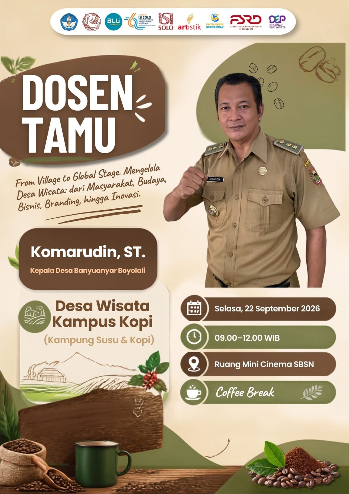

"From Village to Global Stage"
Mengelola Desa Wisata: dari Masyarakat, Budaya, Bisnis, Branding, hingga Inovasi Berkelanjutan.
Hitung Mundur Acara:

Kepala Desa Banyuanyar Boyolali
Kampung Susu & Kopi Banyuanyar, Ampel, Boyolali - Jawa Tengah
Tanggal Pelaksanaan
Selasa, 22 Sep 2026
Waktu Sesi
09.00 - 12.00 WIB
Lokasi Acara
Mini Cinema SBSN ISI Solo
Fasilitas Tambahan
Free Coffee Break
Studi kasus nyata pengalihan potensi lokal Banyuanyar dari skala desa menuju panggung industri pariwisata berstandar global.
Strategi merangkul warga lokal agar berpartisipasi aktif membangun ekosistem desa wisata yang inklusif dan berkelanjutan.
Mengolah komoditas lokal susu & kopi menjadi produk bernilai tambah tinggi dan daya tarik wisata unggulan.
Teknik memposisikan identitas destinasi agar memiliki reputasi unik, terpercaya, dan menarik bagi wisatawan nusantara & mancanegara.
Penerapan ide-ide kreatif dan teknologi terkini dalam tata kelola wahana edukasi, agrowisata, dan amenitas destinasi.
Terletak di lereng Gunung Merbabu, Banyuanyar sukses memadukan potensi peternakan sapi perah dan perkebunan kopi robusta/arabika menjadi konsep edukasi pariwisata terpadu bernama **"Kampus Kopi"**.
Edukasi proses pembibitan hingga penyeduhan kopi segar (*Bean to Cup*).
Pengolahan susu murni menjadi keju, olahan olahan kuliner, & wisata perah.
Pemberdayaan UMKM lokal dengan standarisasi bisnis modern.
Klik tab untuk mempelajari lebih lanjut
Memiliki profil rasa khas yang seimbang dengan body mantap dan aroma floral herbal dari ketinggian lereng Merbabu.
Selasa, 22 September 2026 • 09.00 - 12.00 WIB
Absensi kehadiran di lobby Mini Cinema SBSN & pembagian kit seminar.
Pembukaan resmi oleh pimpinan Fakultas Seni Rupa dan Desain (FSRD ISI Solo).
Pemaparan materi "From Village to Global Stage: Mengelola Desa Wisata Banyuanyar".
Sesi dialog terbuka antara mahasiswa/dosen dengan narasumber.
Penyerahan cenderamata, foto bersama, dan pencicipan Kopi Banyuanyar.
Gedung Surat Berharga Syariah Negara (SBSN), Kampus FSRD Institut Seni Indonesia Surakarta (ISI Solo).
Fakultas Seni Rupa dan Desain - ISI Surakarta
Gratis! Tempat terbatas. Dapatkan tiket digital setelah mengisi formulir di bawah ini.